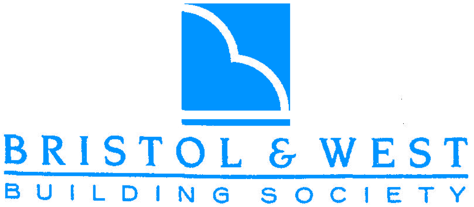
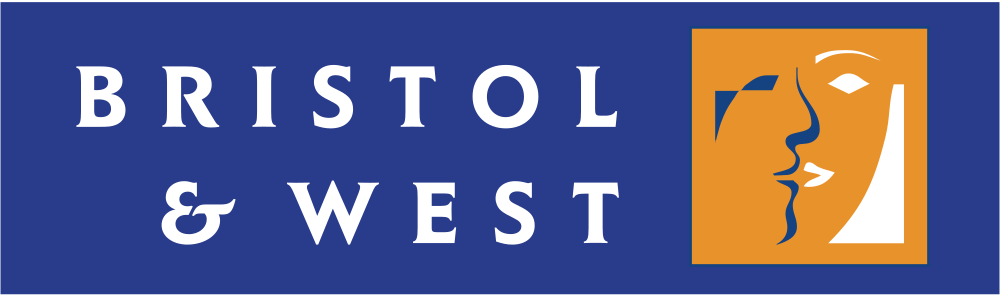
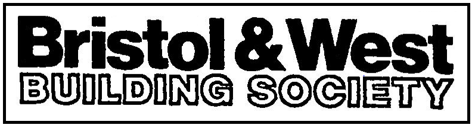
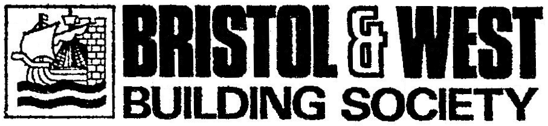
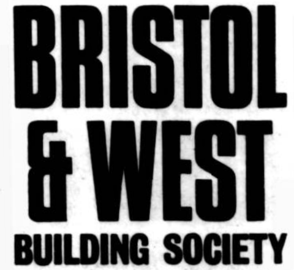
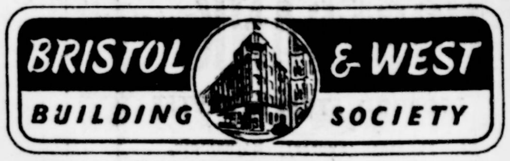

CoventryClick any card to explore that society's page.
Bristol & West Building Society was established in 1850 as the Bristol, West of England & South Wales Permanent Building Society and was renamed around 1925. It expanded significantly over the following decades, acquiring over a score of smaller building societies, before being demutualised in 1997 and acquired by Bank of Ireland, after which it ceased to exist as a mutual building society.

1994 Onwards
1975-1987
1968-1975
1967
Until 1966Last updated: 06/05/2026